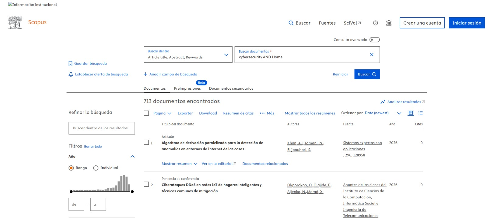
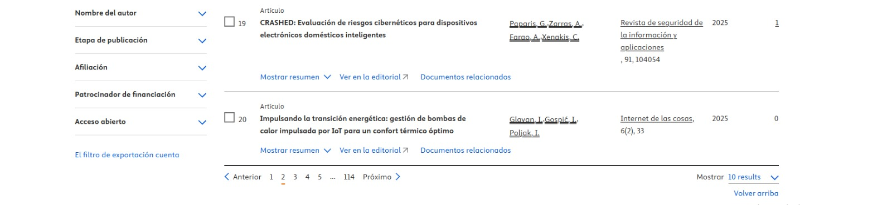
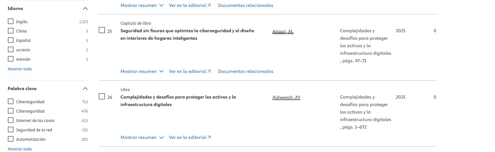

CIBERSEGURIDAD EN EL HOGAR
La ciberseguridad en el hogar hace referencia al conjunto de medidas, prácticas y herramientas orientadas a proteger las redes domésticas y los dispositivos conectados, como computadores, celulares, televisores inteligentes, cámaras de seguridad y electrodomésticos del Internet de las Cosas (IoT). Su objetivo es garantizar la privacidad, la confidencialidad de los datos personales y la seguridad digital de los integrantes de la familia frente a amenazas como el robo de información, accesos no autorizados, malware o ataques cibernéticos que puedan afectar la vida cotidiana.
Resultados de la búsqueda
Articulo 1
| Nombre de los autores | Base de datos | Cadena de búsqueda | Cantidad de documentos | Captura Resultado |
|---|---|---|---|---|
| Okporokpo, Oghenetejiri Olajide, Funminiyi Ajienka, Nemitari Mamá, Xiaoqi |
Scopus | Cybersecurity AND Home | 713 |  |
Resultados de la búsqueda
Articulo 2
| Nombre de los autores | Base de datos | Cadena de búsqueda | Cantidad de documentos | Captura Resultado |
|---|---|---|---|---|
| Georgios Paparis. Apostolis Zarras Aristeidis Farao Christos Xenakis |
Scopus | Cybersecurity AND Home | 713 |  |
Resultados de la búsqueda
Articulo 3
| Nombre de los autores | Base de datos | Cadena de búsqueda | Cantidad de documentos | Captura Resultado |
|---|---|---|---|---|
| Ansari, Mona |
Scopus | Cybersecurity AND Home | 713 |  |
Articulo 1: DDoS Cyberattacks in Smart Home IoT Networks and Common Mitigation Techniquess
- Autores:Okporokpo, OghenetejiriOlajide, FunminiyiAjienka, Nemitari Mamá, Xiaoqi
- Año: 2025
Resumen
La prevalencia de los dispositivos del Internet de las Cosas (IoT) para hogares inteligentes ha impulsado su adopción a nivel mundial. Su amplia aceptación y adopción, tanto por parte de organizaciones como de particulares, se debe a las numerosas ventajas que ofrecen las tecnologías del Internet de las Cosas (IoT) en desarrollo. Estas tecnologías incorporan sensores, cámaras y actuadores, lo que les permite recopilar información del entorno y realizar tareas específicas, simplificando así la vida diaria y el trabajo de los usuarios. Sin embargo, la aparición de diversos tipos de dispositivos para hogares inteligentes ha amplificado significativamente el panorama de ciberamenazas, lo que ha generado una mayor demanda de medidas de ciberseguridad mejoradas. La escalada y evolución de las amenazas digitales dirigidas a las redes de hogares inteligentes ha dado lugar a diversas innovaciones. Sin embargo, a pesar de la extensa investigación, los ataques de denegación de servicio distribuido (DDoS) siguen siendo un vector de ataque generalizado y común dirigido a las redes de IoT de hogares inteligentes. Este estudio profundiza en los diversos tipos de ataques DDoS existentes dirigidos a las redes de IoT de hogares inteligentes y en los enfoques comunes de ciberseguridad diseñados para mitigar estos desafíos únicos. Además, clasificamos las técnicas de mitigación en tres categorías principales: sistemas basados en acciones o eventos, basados en la ubicación y sistemas híbridos. Finalmente, destacamos los desafíos asociados con cada una de estas técnicas y presentamos las futuras líneas de investigación en este campo emergente.
Articulo 2: CRASHED: Cyber risk assessment for smart home electronic devices
- Autores:Georgios Paparis.Apostolis Zarras, Aristeidis Farao,Christos Xenakis
- Año: 2025
Resumen
La rápida proliferación de la tecnología del Internet de las Cosas (IoT) ha enriquecido los hogares modernos con dispositivos inteligentes, mejorando la comodidad, pero a la vez incrementando la vulnerabilidad a las ciberamenazas. Este documento presenta CRASHED, una innovadora metodología de evaluación de riesgos cibernéticos diseñada específicamente para ecosistemas de hogares inteligentes. En comparación con los enfoques existentes, CRASHED integra los marcos MITRE ATT&CK y CAPEC para identificar y analizar sistemáticamente amenazas, vulnerabilidades e impactos potenciales. Mediante el empleo de perfiles específicos para cada dispositivo, métricas cuantitativas y sofisticados mecanismos de ponderación, ofrece una evaluación multicapa de los ciberriesgos que considera la criticidad de los activos y la gravedad de las amenazas, lo que la distingue de los métodos convencionales que carecen de tal granularidad. La novedad de CRASHED reside en su evaluación exhaustiva de las vulnerabilidades sistémicas y las repercusiones domésticas. Estudios de caso sobre diversas configuraciones de hogares inteligentes demuestran su eficacia en el modelado, análisis y mitigación de riesgos en comparación con los marcos existentes. Este trabajo representa un avance significativo en la protección de entornos domésticos inteligentes, lo que subraya la urgente necesidad de modelos especializados de evaluación de riesgos cibernéticos en nuestra era interconectada. La metodología propuesta no solo mejora la detección y la respuesta ante amenazas, sino que también aborda deficiencias críticas en las bases de datos de vulnerabilidades y los procesos de cálculo de riesgos, ofreciendo una solución transformadora a los desafíos cambiantes de la ciberseguridad en hogares inteligentes.
Seamless Security Optimizing Cybersecurity and Design in Smart Home Interiors
- Autores:Ansari, Mona
- Año: 2025
Resumen
Esta sección investiga los métodos de protección que ofrece el diseño de interiores contra las amenazas de los dispositivos IoT presentes en los hogares inteligentes. La investigación analiza los enfoques para mejorar la seguridad mediante el estudio de datos bibliográficos, centrándose en la ubicación de los dispositivos, la selección de materiales y los procesos de integración de la seguridad. El capítulo sugiere que los diseñadores de interiores colaboren con ingenieros informáticos y expertos en ciberseguridad para abordar los riesgos de seguridad del sistema y del factor humano. La investigación de Rose utiliza la tecnología del hogar inteligente en combinación con principios de diseño para crear directrices que garanticen espacios habitables fáciles de usar, manteniendo al mismo tiempo el valor estético, lo que aporta conceptos relevantes a los debates sobre seguridad en hogares inteligentes.